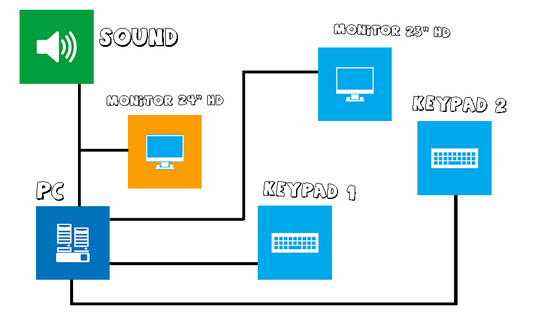
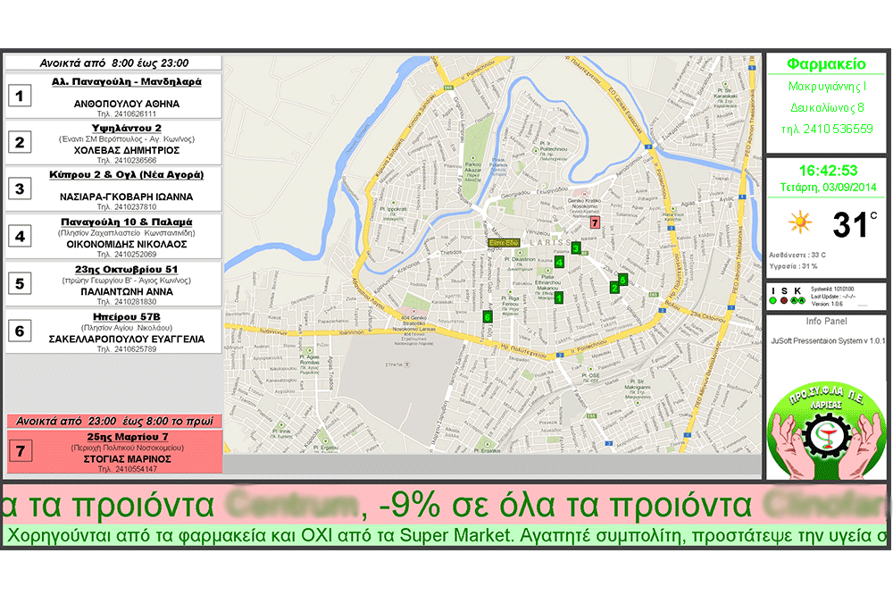
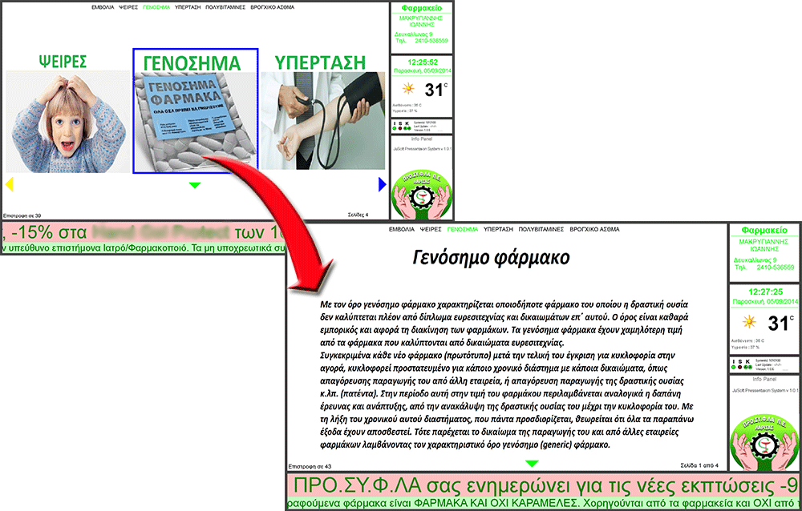
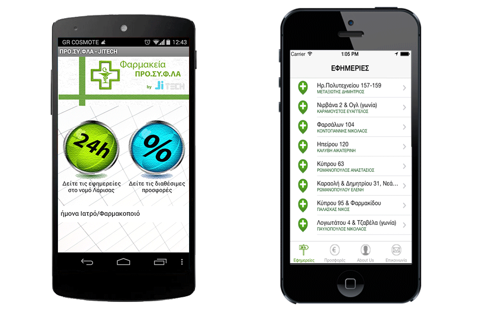

Ο browser σας δεν υποστηρίζει κάποιες λειτουργίες που απαιτούνται από αυτή τη σελίδα , οπότε και βλέπετε μια απλούστερη έκδοση.
Για να δείτε τη σελίδα με όλες τις δυνατότητες παρακαλώ χρησιμοποιήστε τις τελευταίες εκδόσεις των Chrome, Safari η Firefox browsers.
Σας παρουσιάζουμε ενα νέο διαδραστικό τρόπο ενημέρωσης και υπηρεσιών υγείας
Μετά την επιτυχημένη πορεία του JuPress στη Θεσσαλονίκη , η Jitech σε συνεργασία με τον ΠΡΟ.ΣΥ.Φ.ΛΑ, ξανασχεδιάζει το σύστημα μετατρέποντας το πλέον σε διαδραστικό. Για πρώτη φορα στην Ελλάδα καινοτομούμε εγκαθιστώντας το σύστημα σε 150 σημεία στο νομό Λάρισας, μετατρέποντας κάθε βιτρίνα σε μια ξεχωριστή εμπειρία για τον χρήστη. Το σύστημα υλοποιήθηκε με δική μας μελέτης και ανάπτυξης πρωτοπόρου-φιλικού προς το χρήστη λογισμικό και ειδικό διαδραστικό πληκτρολόγιο που βρίσκεται σε αναμονή παγκόσμιας πατέντας.
Tην επόμενη φορα λοιπόν που θα ακούσετε μια φιλική φωνη να σας καλέι με το γνωστό "Καλως ορίσατε στο φαρμακείο μας", σταθείτε και ανακαλύψτε τις δυνατότητες που σας παρέχει ένα πλήρως διαδραστικό σύστημα , σχεδιασμένο με κέντρο εσάς!
Η Jitech και ο ΠΡΟ.ΣΥ.Φ.ΛΑ σας παρουσιάζει το επιτυχημένο
Jupress *
* που έγινε διαδραστικό !
Το Jupress
έχει απλή αλλά χρηστική συνδεσμολογία και αρχιτεκτονική.

Χρησιμοποιήσαμε μια μεγάληιδέα
και προχωρίσαμε στην αντίστοιχη υλοπoίηση

Με όθόνεςΥψηλής Ανάλυσης (Full HD 1080p) εξασφαλίσαμε ότι το περιεχόμενο θα φαίνεται σωστά και καθαρά.

Μετά την εγκατάσταση του Jupress στα φαρμακεία του ΠΡΟ.ΣΥ.Φ.ΛΑ παρατηρήθηκε ανοδική τάση των πωλήσεων :
Τα στοιχεία προέρχονται από τις πωλήσεις του ΠΡΟ.ΣΥ.Φ.ΛΑ και αφορούν 2 τυχαίους μήνες των ετών 2013 & 2014
Και συνεχίζουμε..
Το Jupress μας ενημερώνει φωνητικά για τις εφημερείες - διανυκτερεύσεις Φαρμακείων του νομού
καθώς και real time navigation!

Mobile Apps (Android & IoS) για να έχετε το Jupress παντου !